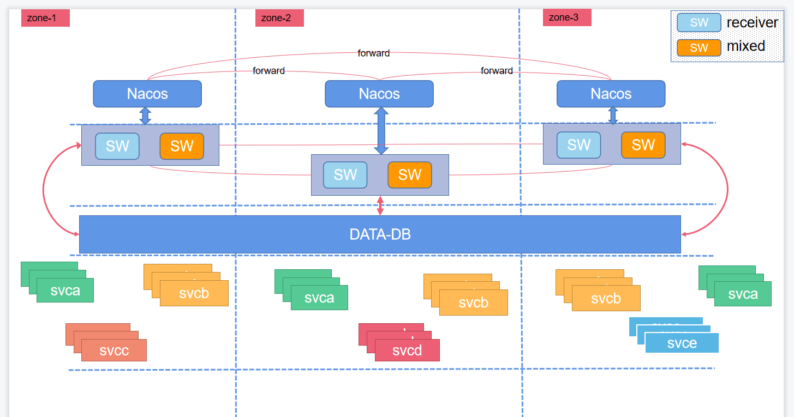

10 minutes
Skywalking

Service: 功能的具体实现 空 接口
ModuleServiceHolder: 管理某个模块实现的类 registerServiceImplementation(Class<? extends Service> serviceType, Service service): 注册 服务，（一个模块中，可能有多个实现） T getService(Class serviceType)： 获取实现服务
ModuleProvider: 模块提供者管理，是 ModuleServiceHolder 的抽象实现 持有 ModuleDefine 和 ModuleManager 的引用 管理 Service 的 Map: Map<Class<? extends Service>, Service> services; 当执行 registerServiceImplementation 时，即往该 map 中添加记录
抽象方法： Class<? extends ModuleDefine> module()： 获取所属模块的 class ModuleConfig createConfigBeanIfAbsent()： 创建 模块配置 prepare()： 准备动作： In prepare stage, the moduleDefine should initialize things which are irrelative other modules. start()： 开始动作：In start stage, the moduleDefine has been ready for interop. notifyAfterCompleted()：当所有模块都启动完成，作为回调通知： This callback executes after all modules start up successfully. String[] requiredModules()： 当前模块依赖其它模块的名称： moduleDefine names which does this moduleDefine require? String name()： provider 的名称
ModuleProviderHolder: 模块提供者的管理， 接口类型 ModuleServiceHolder provider()： 获取模块提供者
ModuleDefine: 模块的定义， 是 ModuleProviderHolder 的抽象实现 持有 ModuleProvier 的引用： private ModuleProvider loadedProvider = null
prepare(ModuleManager moduleManager, ApplicationConfiguration.ModuleConfiguration configuration, ServiceLoader moduleProviderLoader): module 的 prepare 阶段， 找到所有的 providers 并且让他们执行 prepare
抽象方法： Class[] services()： 该模块提供的 Service；
ModuleDefineHolder: 模块定义的管理， 接口类型 boolean has(String moduleName)： 是否有某个模块 ModuleProviderHolder find(String moduleName)： 通过模块名获取模块管理者
ModuleManager: 模块管理者的具体实现 持有所有模块的引用： final Map<String, ModuleDefine> loadedModules 变量 isInPrepareStage： 是否在 prepare 的阶段
init(ApplicationConfiguration applicationConfiguration): 接收 ApplicationConfiguration 配置进行初始化： a.
ModuleConfig: 表示配置管理类， 抽象类：
ApplicationConfiguration: 模块化配置类， 模块管理器启动，查找 等都会基于此配置类运行
- 持有 ModuleConfig 引用： HashMap<String, ModuleConfiguration> modules
- 内部类
- ModuleConfiguration: 模块配置类 持有 模块提供者的配置引用： HashMap<String, ProviderConfiguration> providers
- ProviderConfiguration: 模块提供者的 配置 持有 Properties 对象的引用， 表示该 provider 的配置，最终都转化为 Properties 对象
BootstrapFlow: 启动流程
—————————————————————— 综上：
- skywalking 分模块管理， 有多个模块， 每个 module 都有一个 provider， 每个 provider 可以注册多个 Service, 而 Service 可以理解为 具体功能的实现； 与 Provider 一起工作；
Skywalking 服务端启动流程： apm-dist apm-dist-es7 中表示发布时使用哪个启动类， 如果 es7 则 对应启动为 oap-server/server-starter oap-server/server-starter-es7, 实际最终都是以 opa-server/server-bootstrap 模块启动： OAPServerBootstrap#start()
OAPServerBootstrap.start():
- 获取启动模式： 通过系统属性 -Dmode= 来获取，并且设置启动模式 init: 做所有初始化的事情，然后程序退出 no-init: 正常启动，不需要做存储层初始化（比如 es 存储的话就创建索引，索引模板等； mysql 的话就创建表结构等）
- 构造配置加载类， ApplicationConfigLoader， 构造模块管理器 ModuleManager 在这个地方， ApplicationConfigLoader 实现于 ConfigLoader , 其中 T 的具体类型为 ApplicationConfiguration， 其中定义 load 方法，表示如何加载配置文件得到 T， 2.1 使用 configLoader.load() 加载获取配置类 ApplicationConfiguration, 下面是具体的加载逻辑： 2.1.1 构造空的 ApplicationConfiguration 实例， 执行 loadConfig（configuration） 对该实例填充内容 2.1.2 读取 applicaition.yml 文件， 使用 yml 工具转换成 Map<String, Map<String, Object» 对象， 其中， application.yml 文件也是按照模块进行定义的； 2.1.3 模块中有配置项为 selector: 表示此模块使用具体哪个来子功能来实现，比如 存储可以使用 h2, mysql, es/es7, 集群功能可以使用 nacos/zk/k8s 等 对每个模块的配置进行 selector 的加载， 具体是取 selector 值对应 key 的 配置， 非该 value 的 配置都会从 configuration 中移除，因为也是无用的 如果禁用某个模块，则将 selector 置为 “-"; 如果 selector 没有禁用，并且配置也找不到，则会抛错；会将无用的模块也移除 2.1.4 配置 2.1.5 执行 overrideConfigBySystemEnv，通过系统属性覆盖 module 和 provider 的配置 2.1.6 默认启动时最终定位 23 个 module 2.2 然后调用模块管理器 manager 的 init 方法使用加载获取到的 ApplicationConfiguration 进行初始化 2.2.1 通过 java 原生的 service SPI 机制获取 所有的 ModuleDefine 和 ModuleProvider 2.2.2 遍历存在于 ApplicaitonConfiguration 中的 module， 并执行 module 的 prepare 方法，一下 prepare 方法逻辑： 2.2.2.1 遍历 moduleProvider, 找到所属该 module 的 provider 2.2.2.2 设置 moduleDefine 的 loadedProvider 为上一步骤找出的 provider （每个 module 对应一个 对象， 每个对象都会有一个 provider）， 每个 provider 都会有 moduleManager(全局一个) 的引用， 并且持有自身所属 module 的引用 2.2.2.3 从 applicationConfiguration 中复制属性到 loadedProvider 中； 2.2.2.4 loadedProvider 也执行自己的 prepare() 方法， 每个 provider 都有自己的实现，具体得看每一个 provider 的逻辑 2.2.3 moduleDefine 的 prepare 方法执行完后就放入 loadModules 这个 map 中， key 为 module,name(), value 为 module 本身 2.2.4 整个的 prepare 阶段完成， isInPrepareStage 也置为 false 2.2.5 通过加载的 loadedModules 构造 BootstrapFlow， 执行 bootstrapFlow 的 start（moduleManager） ，然后执行通知 2.2.5.1 构造 BootstrapFlow 2.2.5.1.1 持有所有加载的 modules 的引用，构造空的 ModuleProvider 的 LinkedList: startupSequence 2.2.5.1.1 遍历 modules， 拿到所有的 providers，provider 中的方法 requiredModules 定义了它所依赖的模块， 对这所有的模块和 providers 进行处理 （4层循环处理），最终按照依赖顺序放进 startupSequence 的 链表中 2.2.5.2 BootstrapFlow 的 start 执行 2.2.5.2.1 遍历 startupSequence 链表，依次执行每个 provider 的 start() 方法 2.2.5.3 BootstrapFlow 的 notifyAfterComplete 2.2.5.3.1 遍历 startupSequence 链表，依次执行每个 provider 的 notifyAfterCompleted() 方法
综上所述：
- 通过配置文件和 SPI 机制加载 module 及 moduleProvider
- 构造 moduleManager 执行初始化，对 module 的 provider 执行 prepare() 方法
- 构造 bootstrapFlow 然后捋清 provider 的依赖形成一个具有先后顺序链表， 先遍历链表依次执行每个 provider 的 start() 方法， 最后再遍历链表依次执行每个 provider 的 notifyComplete() 方法
接下来依次分析各个 provider 的逻辑 默认配置下，startupSequence 的 provider 链表： NoneConfigurationProvider ConfigurationModule GraphQLQueryProvider QueryModule NoneTelemetryProvider TelemetryModule CoreModuleProvider CoreModule SharingServerModuleProvider SharingServerModule ProfileModuleProvider ProfileModule AnalyzerModuleProvider AnalyzerModule MeshReceiverProvider MeshReceiverModule AlarmModuleProvider AlarmModule ConfigurationDiscoveryProvider ConfigurationDiscoveryModule RegisterModuleProvider RegisterModule BrowserModuleProvider BrowserModule ClusterModuleNacosProvider ClusterModule CLRModuleProvider CLRModule EventAnalyzerModuleProvider EventAnalyzerModule EventModuleProvider EventModule MysqlStorageProvider StorageModule TraceModuleProvider TraceModule EnvoyMetricReceiverProvider EnvoyMetricReceiverModule JVMModuleProvider JVMModule MeterReceiverProvider MeterReceiverModule LogAnalyzerModuleProvider LogAnalyzerModule LogModuleProvider LogModule
module sequence: NoneConfigurationProvider(ConfigurationModule) -> GraphQLQueryProvider(QueryModule) -> NoneTelemetryProvider(TelemetryModule) -> CoreModuleProvider(CoreModule) -> SharingServerModuleProvider(SharingServerModule) -> ProfileModuleProvider(ProfileModule) -> AnalyzerModuleProvider(AnalyzerModule) -> MeshReceiverProvider(MeshReceiverModule) -> AlarmModuleProvider(AlarmModule) -> ConfigurationDiscoveryProvider(ConfigurationDiscoveryModule) -> RegisterModuleProvider(RegisterModule) -> BrowserModuleProvider(BrowserModule) -> ClusterModuleNacosProvider(ClusterModule) -> CLRModuleProvider(CLRModule) -> EventAnalyzerModuleProvider(EventAnalyzerModule) -> EventModuleProvider(EventModule) -> MysqlStorageProvider(StorageModule) -> TraceModuleProvider(TraceModule) -> EnvoyMetricReceiverProvider(EnvoyMetricReceiverModule) -> JVMModuleProvider(JVMModule) -> MeterReceiverProvider(MeterReceiverModule) -> LogAnalyzerModuleProvider(LogAnalyzerModule) -> LogModuleProvider(LogModule)
以下针对上面所有的 provider 依次展开分析
NoneConfigurationProvider: prepare: do nothing start: do nothing notifyAfterCompleted: do nothing
GraphQLQueryProvider: 对界面提供查询的模块 prepare: 读取 graphqls 文件， 构造 graphQL 等配置 start: 使用 jetty 提供服务，暴露 graphQL 查询功能 notifyAfterCompleted: do nothing
NoneTelemetryProvider: //todo
CoreModuleProvider: 核心模块
prepare:
1. 根据 core 模块的配置文件，设置是否激活额外的模型列（让用户更容易看懂 sw 的数据，当前数据都是经过处理的存储到存储层） isActiveExtraModelColumns
2. 创建 EndpointNameGrouping (干嘛的还没看)
3. 注册服务 NamingControl, 该服务主要用类做名称控制：
NamingControl provides the service to make the names of service, instance and endpoint
following the rules or * patterns, including length control, grouping, etc.
4. 构造 endpointNameGroupingRuleWatcher, 主要是接收配置变化，实时更新规则
5. 构造类型为 AnnotationScan 的 scopeScan, 该对象保存 AnnotationListenerCache 链表，主要用来做通知; 然后添加一个类型为
DefaultScopeDefine 下的 listener, 执行 scan 扫描： 扫描添加了 ScopeDeclaration 注解的类并执行类加载， 然后做 complete 通知
a. AnnotationListenerCache 持有一个 AnnotationListener 的对象，以及匹配上条件的 Class 的 list列表
b. scan 这个方法扫描所有 org.apache.skywalking 包的类， 然后做加载， 匹配，又用到了反射，耗时比较长
c. complete 最终就是对每个 listener 做 notify 通知动作， 在这个逻辑里，是在 DefaultScopeDefine 中添加 scope， addNewScope()
d. ScopeDeclaration 注解：
* ScopeDeclaration includes
* 1.Source entity used in OAL script, such as Service as a Scope could be used like this in the OAL script.
* service_resp_time = from(Service.latency).longAvg();
* 2. Manual source such as {@link Segment}
* 3. None stream entity like {@link ProfileTaskRecord}.
* NOTICE, in OAL script, disable is for stream, rather than source, it doesn’t require this annotation.
d. DefaultScopeDefine 的 Listener 是一个内部类， addNewScope（ScopeDeclaration , Class ） 的逻辑：(注解， 以及加了该注解的类)
1. 获取 注解的 id 和 name 做校验，
2. 获取 class 上的 ScopeDefaultColumn.VirtualColumnDefinition 注解，如果存在就构造 ScopeDefaultColumn 对象并添加到 list 数组中，
ScopeDefaultColumn： Define the default columns of source scope. These columns pass down into the
persistent entity(OAL metrics entity) automatically. 主要是定义 scope 默认的 字段，一路传下去到持久层
ScopeDefaultColumn.VirtualColumnDefinition
ScopeDefaultColumn.DefinedByField:
requireDynamicActive: Dynamic active means this column is only activated through core setting explicitly.
表示是否只能有 core 的设置才能激活， 默认为 false, 表示可以由其它方式激活
** 如果它的值为 true 并且 ACTIVE_EXTRA_MODEL_COLUMN 配置为 false, 该字段不会被写入到 持久层 **
3. 获取 class 的所有字段，如果该字段添加了 DefinedByField 注解，根据判断，看是否添加到 scopeDefaultColumns 列表中
4. 获取注解的 catalog 放入到 map 中
5. 默认情况下游 37 个 scope
6. 注册 MeterSystem 类型的服务， （用于指标计算的系统）
MeterSystem provides the API way to create MetricsStreamProcessor rather than manual analysis metrics or OAL script.
提供 api 的方式去创建 指标处理器而不是手动分析指标或 oal 脚本
获取所有 添加了 MeterFunction 注解的类，并且是实现了 AcceptableValue 的类， 添加到 functionRegister map 中
MeterFunction 注解：
Meter function indicate this class is used in SkyWalking meter system. The meter system accepts data from any number
based metrics ecosystem, typically like Prometheus and Micrometer Application Monitoring
大意就是说： 该注解指出当前类适用于 sw 中的 计算测量系统， 接收类似于 prometheus， 应用遥测监控等 指标系统的 number 数据
7. 再次构造 AnnotationScan 类 oalDisable ，注册 DisableRegister 和 SingleDisableScanListener 主要用来处理 oal 相关的：
// todo: 主要涉及到 MultipleDisable， Disable 注解； oal 脚本由内存编译 memory compile ，内存中给那些脚本生成的类加上 注解
8. 根据配置构造 grpcServer 或带 ssl 的 grpcServer, 以及配置相应参数，然后进行 grpcServer 的初始化
9. 根据配置构造 jettyServer，并进行 jettyServer 的初始化
10. 注册一些列的服务：
ConfigService
DownSamplingConfigService
GRPCHandlerRegister
JettyHandlerRegister
IComponentLibraryCatalogService
SourceReceiver -> SourceReceiverImpl
WorkerInstancesService
RemoteSenderService
ModelCreator -> storageModels(StorageModels)
IModelManager -> storageModels(StorageModels)
ModelManipulator -> storageModels(StorageModels)
NetworkAddressAliasCache
// query service
TopologyQueryService
MetricsMetadataQueryService
MetricsQueryService
TraceQueryService
BrowserLogQueryService
LogQueryService
MetadataQueryService
AggregationQueryService
AlarmQueryService
TopNRecordsQueryService
EventQueryService
// profile service
ProfileTaskMutationService
ProfileTaskQueryService
ProfileTaskCache
CommandService
// oal engine loader service
OALEngineLoaderService
annotationScan 注册 StreamAnnotationListener
RemoteClientManager
UITemplateManagementService
11. 构造 ApdexThresholdConfig
start:
1. (GRPCServer) grpcServer 添加 RemoteServiceHandler， 添加 HealthCheckServiceHandler
2. remoteClientManager 启动
3. 禁掉 oal 中 diable 的
4. SourceReceiverImpl 执行 scan()
7. annotationScan 执行 scan()
8. 如果当前节点是 mixed 或 aggregator 角色的，则启动 RemoteInstance 的 grpc, 并找到 clusterModule 中 provider 的 ClusterRegister 类型的服务，注册此 grpc
9. OAPNodeChecker 设置角色
10. 从 moduleManager 中找到 ConfigurationModule 里 provider 下 DynamicConfigurationService 类型的服务，
注册 apdexThresholdConfig 和 endpointNameGroupingRuleWatcher 类型的配置监听
notifyAfterCompleted:
1. 启动 grpcServer ，即上面的 GRPCServer
2. 启动 jettyServer
3. PersistenceTimer 启动：
4. CacheUpdateTimer.INSTANCE 启动
5. 通过 ui-initialized-templates 目录文件构造 UITemplateInitializer，
重点为： ManagementStreamProcessor.getInstance().in(uiTemplate);
SharingServerModuleProvider: prepare: 1. 如果自己模块中配置的 restPort > 0 则初始化一个 jettyServer， 并使用 jettyServer 构造 JettyHandlerRegisterImpl 注册到 serviceImplementation 2. 反之，构造空的 ReceiverJettyHandlerRegister， 注册到 serviceImplementation, 两个的 Service 均为 JettyHandlerRegister 3. 如果自己模块中的 grpcPort != 0 则根据配置初始化一个 grpcServer, 并使用 grpcServer 构造 GRPCHandlerRegisterImpl 注册到 serviceImplementation 4. 反之，构造空的 ReceiverGRPCHandlerRegister 并注册到 serviceImplementation, 两个的 Service 均为 GRPCHandlerRegister start: 1. 若 grpcServer 不为空则添加 HealthCheckServiceHandler 类型的 handler 2. 若 receiverGRPCHandlerRegister 不为空则从 coreModule 中获取 GRPCHandlerRegister 设置到自己里面 3. 若 receiverJettyHandlerRegister 不为空则从 coreModule 中获取 JettyHandlerRegister 设置到自己里面 notifyAfterCompleted: 1. 若 grpcServer 不为空 则启动该 server 2. 若 jettyServer 不为空，则启动该 server
ProfileModuleProvider: prepare: do nothing start: 1. 获取 sharingServerModule 中的 grpcHandlerRegister, 2. 给该 grpc 添加两个 handler: ProfileTaskServiceHandler， ProfileTaskServiceHandlerCompat notifyAfterCompleted: do nothing
AnalyzerModuleProvider: prepare: 1. 构造 DBLatencyThresholdsAndWatcher UninstrumentedGatewaysConfig TraceSampleRateWatcher TraceLatencyThresholdsAndWatcher 2. 根据以上对象设置该模块的 config 3. 注册服务 SegmentParserServiceImpl MeterProcessService start: 1. 从 coreModule 中获取 OALEngineLoaderService 并执行加载； 此地方就是做 oal 的初始化加载相关 （非常重要） 2. 从 configurationModule 中获取 DynamicConfigurationService 类型服务，添加一下监听器，他们都是 抽象类 ConfigChangeWatcher 的具体实现： ConfigChangeWatcher represents a watcher implementor, it will be called when the target value changed. thresholds： DBLatencyThresholdsAndWatcher, 主要是 db 慢查询相关的 uninstrumentedGatewaysConfig： traceSampleRateWatcher： traceLatencyThresholdsAndWatcher： 相当于这些配置支持动态配置，当配置变化， 动态配置服务会通知并做出相应变化 3. segmentParserService 设置监听器管理： 主要是添加了以下监听器： MultiScopesAnalysisListener NetworkAddressAliasMappingListener SegmentAnalysisListener 4. MeterProcessService 开始工作： Management all of the meter builders. 根据配置创建了指标转换器数组， 再必要时创建 遥测数据处理器 notifyAfterCompleted: do nothing
MeshReceiverProvider: 服务网格相关 // todo
AlarmModuleProvider: 主要用来做监控告警的 // todo
ConfigurationDiscoveryProvider: 配置中心发现功能 prepare: 1. 构造 AgentConfigurationsWatcher： AgentConfigurationsWatcher used to handle dynamic configuration changes. ConfigChangeWatcher: represents a watcher implementor, it will be called when the target value changed. start: 1. 从 configurationModule 获取 DynamicConfigurationService， 设置 agentConfigurationWatcher 2. 从 sharingServerModule 获取 GRPCHandlerRegister, 添加 handler: ConfigurationDiscoveryServiceHandler 主要是处理从 agent 过来的获取动态配置的 grpc request ，如果有相关配置就会返回到 agent 端 notifyAfterCompleted: do nothing.
RegisterModuleProvider： prepare: do nothing start: 1. 从 sharingServerModule 中获取 GrpcHandlerRegister, 添加两个处理器 ManagementServiceHandler： 报告实例属性配置： reportInstanceProperties 1. 从 coreModule 中获取 SourceReceiver 服务并持有该引用 2. 从 coreModule 中获取 NamingControl 服务并持有该引用 ManagementServiceHandlerCompat: 持有上面的 ManagementServiceHandler 引用 2. 从 sharingServerModule 中获取 JettyHandlerRegister, 添加两个处理器 ManagementServiceReportPropertiesHandler: 1. 同样的， 从 coreModule 中持有 sourceReceiver 和 NamingControl 服务引用 2. JettyHandler 继承自 HttpServlet， 此 handler 中实现了 doPost 方法 pathSpec() 方法为其关注处理的路径 /v3/management/reportProperties ManagementServiceKeepAliveHandler： 1. 同上面的 handler 差不多， 关注的路径是： /v3/management/keepAlive 从以上分析可以得出，此处也是比较核心的逻辑， grpc 和 jetty， sourceReceiver 后面会与 dispatcher 紧密相连 notifyAfterCompleted: do nothing.
BrowserModuleProvider： // 看起来和 浏览器的性能及错误日志处理有关， todo
ClusterModuleNacosProvider: 属于 clusterModule 的一个 provider, 主要用来作 skywalking 的集群管理 当 clusterModule 中 selector 为 nacos 时，使用的 provider 则为此 nacosProvider prepare: 1. 解析配置， 创建 Nacos 的 NamingService 2. 使用该 NamingService 构造 NacosCoordinator, 实现了 ClusterRegister 和 ClusterNodeQuery ClusterRegister: 主要用来做注册远程实例到注册中心 ClusterNodeQuery: 主要是从注册中心查询 sw 集群节点 start: do nothing. notifyAfterCompleted: do nothing.
CLRModuleProvider: // 好像是和 .net 有关的，暂不做分析， todo
EventAnalyzerModuleProvider: prepare: 1. 注册服务 EventAnalyzerServiceImpl start: 给上面的服务添加 EventRecordAnalyzerListener.Factory, 该 factory 持有 coreModule 中的 NamingControl 服务的引用 EventRecordAnalyzerListener forwards the event data to the persistence layer with the query required conditions. notifyAfterCompleted: do nothing.
EventModuleProvider: prepare: do nothing. start: 获取 sharingServerModule 中的 grpcHandlerRegister, 添加 EventGrpcServiceHandler 处理器 EventGrpcServiceHandler： 1. 从 TelemetryModule 中获取 MetricsCreator 服务 2. 持有从 EventAnalyzerModule 中获取的 EventAnalyzerService 服务的引用 3. 通过 metricsCreator 创建 counter 和 histogramMetric， 其实就是不同类型的指标创造器，在此处创建直方图和计数器 histogramMetric: event_in_latency counter: event_error_count notifyAfterCompleted: do nothing.
StorageProvider: MysqlStorageProvider: 属于 storageModule 的一个 provider， 主要用来作数据持久层 当 selector 为 mysql 时， 使用的则是此 provider; 文档说明， 此 provider 应当作为第二选（第一选是 elasticsearch） 它来自于 H2StorageProvider， 在生产使用时，需要再三考虑；此模块并不是专门只为 mysql ，而是 作为 JDBC 使用，也可用作其它存储 比如： Apache ShardingSphere & TiDB prepare: StorageModuleElasticsearchProvider: storage provider for ElasticSearch 6. prepare: 1. 注册 StorageBuilderFactory.Default() 服务. 2. 通过配置构造 esClient 并持有其引用 3. 使用上面的 esClient 构造以下服务并注册进 provider 中: BatchProcessESDAO: 服务类型为 IBatchDAO, 属于数据持久层的抽象，支持同步和异步模式. StorageEsDAO: HistoryDeleteEsDAO: NetworkAddressAliasEsDAO: TopologyQueryEsDAO: MetricsQueryEsDAO: TraceQueryEsDAO: BrowserLogQueryEsDAO: MetadataQueryEsDAO: AggregationQueryEsDAO: AlarmQueryEsDAO: TopNRecordsQueryEsDAO: LogQueryEsDAO: ProfileTaskQueryEsDAO: ProfileTaskLogEsDAO: ProfileThreadSnapshotQueryEsDAO: UITemplateManagementEsDAO: ESEventQueryDAO: start: 1. 通过 coreModule 中的 metricCreator 服务创建 “storage_elasticsearch” gauge 类型的 HealthCheckMetrics 并注册到上面的 esClient 中 2. 通过 esClient 构造 StorageEsInstaller 并添加到 coreModule 中 ModelCreator 服务的 modelListener 列表中去 StorageEsInstaller 是 抽象类 ModelInstaller 的 es 实现, 不同类型的数据库都有各自的实现 在 ModelInstaller 中的 whenCreating 方法中定义： 如果 启动模式 Mode 不为 “no-init”, 则创建表结构（初始化相关， es 的索引， mysql 的数据表） 如果启动模式 Mode 带有 “no-init”,表示不做初始化动作，并循环停顿 3s 检查表接口是否存在. notifyAfterCompleted: do nothing.
TraceModuleProvider:
prepare: do nothing.
start:
1. 从 sharingServerModule 模块中拿到 GRPCHandlerRegister 和 JettyHandlerRegister
2. 向 grpc 中添加 TraceSegmentReportServiceHandler 和 TraceSegmentReportServiceHandlerCompat
TraceSegmentReportServiceHandler： 持有 moduleManager 和 AnalyzerModule 中的 ISegmentParserService 服务的引用
从 telemetryModule 中拿到 metricsCreator 创建 “trace_in_latency” Histogram 和 “trace_analysis_error_count” 的 Counter 指标
3. 向 jetty 中添加 TraceSegmentReportListServletHandler 和 TraceSegmentReportSingleServletHandler
TraceSegmentReportListServletHandler 做的事情和 TraceSegmentReportServiceHandler 差不多
notifyAfterCompleted: do nothing.
EnvoyMetricReceiverProvider: // 看着应该是 服务网格中相关的指标，咱不解析 todo
JVMModuleProvider: prepare: do nothing start: 1. 从 coreModule 中拿到 OALEngineLoaderService 并加载 JVMOALDefine.INSTANCE 主要就是 加载关于 jvm 的 oal “oal/java-agent.oal” 文件，另外就是 “org.apache.skywalking.oap.server.core.source” 包下 2. 拿到 sharingServerModule 中的 GRPCHandlerRegister 并向其中添加两个 handler: JVMMetricReportServiceHandler JVMMetricReportServiceHandlerCompat notifyAfterCompleted: do nothing.
MeterReceiverProvider: prepare: do nothing start: 1. 拿到 analyzerModule 中的 IMeterProcessService 服务并持有该引用 2. 拿到 sharingServerModule 中的 GRPCHandlerRegister 并向其中添加两个 handler: MeterServiceHandler MeterServiceHandlerCompat notifyAfterCompleted: do nothing.
LogAnalyzerModuleProvider: prepare: 注册服务 LogAnalyzerServiceImpl，该服务： 1. 有一个 doAnalysis 方法，该方法中使用 moduleManager 和 moduleConfig 构造 LogAnalyzer 并执行分析 Analyze the collected log data, is the entry point for log analysis. 表示的是 日志分析的入口 2. 有个 addListenerfactory 方法，表示添加监听器， 在 doAnalysis 时，会分别调用所有 listener 的 parse 和 build 方法 LogAnalysisListener：LogAnalysisListener represents the callback when OAP does the log data analysis. 表示回调 build(): 分析处理的最后一步，典型的是将分析结果发到 source receiver parse(): 从探针中分析原始数据 start: 1. 拿到 analyzerModule 中的 IMeterProcessService 服务并持有该引用 2. 拿到 sharingServerModule 中的 GRPCHandlerRegister 并向其中添加两个 handler: MeterServiceHandler MeterServiceHandlerCompat notifyAfterCompleted: do nothing.
LogModuleProvider: prepare: do nothing start: 1. 从 sharingServerModule 中拿到 grpc 和 jetty 2. 向 grpc 中添加 LogReportServiceHandler 处理器，向 jetty 中添加 LogReportServiceRestHandler 处理器 LogReportServiceHandler：采集日志数据 1. 持有 moduleManager 引用和 LogAnalyzerModule 中的 ILogAnalyzerService 服务的应用 2. 通过 MetricsCreator 创建 “log_in_latency” 的 Histogram 及 “log_analysis_error_count” 的 Counter 类型指标 LogReportServiceRestHandler： 和上面的处理器差不多 notifyAfterCompleted: do nothing.
综上可以看出
- coreModule 中定义了核心的服务供后面的模块调用
- grpcHandlerRegister 和 jettyHandlerRegister 做着承上启下的作用，从头到尾都在添加 Handler 处理器， 那么，当数据进来时，不同的 handler 都会根据自己的逻辑对数据做处理 所以比较核心的就是要了解 模块中的这些 Handler 做了些什么事情